70+ év textilipari tapasztalat és szakértelem – kötöttáru-gyártás és termékfejlesztés.
Vezérigazgatói köszöntő
Nagy megtiszteltetés számomra, hogy a SZEFO Közhasznú Nonprofit Zrt. új vezérigazgatójaként köszönthetem Önöket. Egy olyan vállalat munkáját folytathatom, amely immár több mint hetven éve biztosít méltó munkalehetőséget fogyatékossággal élő és egészségkárosodott emberek számára.
Büszke vagyok arra a befogadó közösségre, amelyet munkatársaink alkotnak, és amelyben a mindennapokban láthatóvá válik az együttműködés, a szakmai tudás és az emberi méltóság tisztelete.
BővebbenVezérigazgatói köszöntő
Tisztelt Munkatársaink, Tisztelt Partnereink!
Nagy megtiszteltetés számomra, hogy a SZEFO Közhasznú Nonprofit Zrt. új vezérigazgatójaként köszönthetem Önöket. Hatalmas felelősséggel és egyben mély elhivatottsággal fogadom el ezt a megbízatást, hiszen egy olyan vállalat munkáját folytathatom, amelynek immár több mint hetven éve legfontosabb feladata a megváltozott munkaképességű, fogyatékossággal élő és egészségkárosodott emberek foglalkoztatásának, foglalkozási rehabilitációjának és méltányos munkakörülményeinek biztosítása.
Amikor 1953-ban 27 látássérült ember megalapította az egykori Szegedi Fonalmentő Vállalatot, egy közös küldetéssel tették: értékteremtő munkát biztosítani azoknak, akik számára fogyatékosságuk, betegségük miatt a munkaerőpiac kevés esélyt kínált. Ez a küldetés ma is ugyanolyan fontos, mint évtizedekkel ezelőtt.
Büszke vagyok arra a befogadó közösségre, amelyet munkatársaink alkotnak, és amelyben a mindennapokban láthatóvá válik az együttműködés, a szakmai tudás és az emberi méltóság tisztelete.
Vezérigazgatóként számomra egyértelmű: a fogyatékossággal élő és megváltozott munkaképességű kollégák iránti elköteleződés, felelősségvállalás és támogatás nem csupán hagyomány, hanem a jövőnk egyik legfontosabb alapja is.
Kiemelt céljaim:
- a társadalmi felelősségvállalás még határozottabb képviselete
- az esélyegyenlőség további erősítése
- a minőség és innováció folyamatos fejlesztése
- a stabilitás és fenntarthatóság megőrzése
Személyes motivációm egyszerű, mégis mélyről fakadó: olyan munkahelyet, munkakörülményeket és jövőképet kívánok biztosítani, ahol minden kolléga megtalálhatja a helyét, szakmai tudását, képességeit kibontakoztathatja, és érezheti, hogy munkája valódi értéket teremt.
Ezúton szeretném megköszönni munkatársainknak az eddigi elhivatott munkát, partnereinknek pedig a hosszú évek során tanúsított bizalmat és együttműködést. A jövőben is számítok arra, hogy közösen, egymást támogatva folytatjuk munkánkat.
Inspiráljon bennünket az elmúlt 70 év összefogása és kitartása – és építsünk tovább egy olyan vállalatot, amely példát mutat emberségből, szakmaiságból és felelősségvállalásból.
Mérész Attila
vezérigazgató
ISO Tanúsítványaink
Több mint 70 éve vagyunk jelen
1953 óta több ezer megváltozott munkaképességű embernek biztosítottunk munkalehetőséget. Rehabilitációs foglalkoztatóként működésünk szerves része a társadalmi felelősségvállalás és értékteremtés.
1953 óta több ezer megváltozott munkaképességű embernek biztosítottunk munkalehetőséget. Rehabilitációs foglalkoztatóként működésünk szerves része a társadalmi felelősségvállalás és értékteremtés.
Divat- és kötöttáru-gyártással, villamosipari bérgyártással és e-hulladék-kezeléssel foglalkozunk. Korszerű technológia, sok évtizedes szakértelem és gyártási tapasztalat, valamint teljes körű gyártási kapacitás biztosítja versenyképességünket.
Nemzetközi és hazai partnereink számára megbízható gyártási hátteret kínálunk ipari bérgyártás és kötöttárugyártás területén a fejlesztéstől a késztermékig.
Bővebben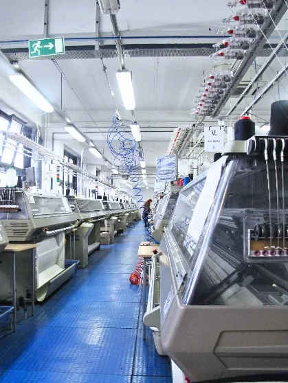
35+ év villamosipari gyártási tapasztalat – áramelosztók és szabályozók összeszerelése.
70+ év tapasztalat rehabilitációs foglalkoztatásban.
Befogadó munkahely, valódi értékteremtés.
0
év folyamatos működés
0
kötöttáru / év
0
elektromos berendezés / év
0
kötöttáru / nap
Befogadó munkahely vagyunk – csapatunk 74%-át megváltozott munkaképességű munkatársak alkotják.
Tevékenységek & üzletágak
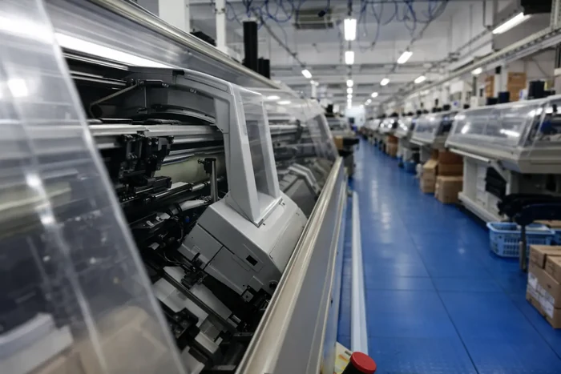
Divat- és kötöttárugyártás
Több mint 70 év gyártási tapasztalattal, korszerű technológiával és széles körű szakértelemmel dolgozunk.
Divat- és kötöttárugyártás
Több mint 70 év szakmai tapasztalat
Több mint 70 éve foglalkozunk kötöttárugyártással, folyamatosan fejlesztve technológiánkat, szakmai tudásunkat és gyártási kapacitásunkat.
Megbízható gyártópartner
Nemzetközi és hazai divatmárkák megbízható gyártópartnereként több évtizedes szakmai tapasztalattal rendelkezünk; a Paul&Shark márka tulajdonosával 2001 óta működünk együtt.
Teljes körű gyártás egy kézben
Prémium minőségű divat- és kötöttáruk teljes körű fejlesztését és gyártását biztosítjuk. A mintázástól a készáruig minden gyártási fázist házon belül végzünk, beleértve a kötést, kikészítést, vasalást, szabást, konfekcionálást, hímzést, filmnyomást, minőségellenőrzést és csomagolást.
Rugalmas megoldások a vevői igényekre
Rugalmasan alkalmazkodunk a vevői igényekhez: kis- és közepes szériák, egyedi termékek és rövid határidejű gyártási feladatok megvalósítását is vállaljuk.
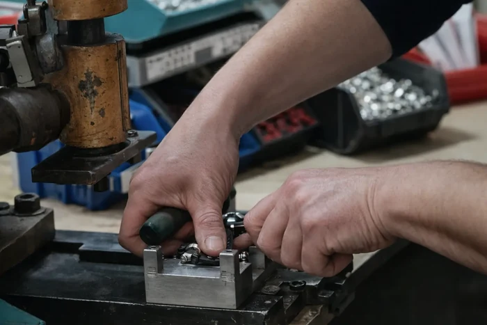
Ipari bérgyártás
Több mint 35 éve megbízható partnerként veszünk részt villamosipari áramelosztó- és szabályozókészülékek gyártásában.
Ipari bérgyártás
Több mint 35 év gyártási tapasztalat
Több mint 35 éve megbízható gyártópartnerként villamosipari áramelosztó- és szabályozókészülékek gyártását és összeszerelését végezzük.
Nagy volumenű, hatékony gyártás
Korszerű technológiai háttérrel és nagy volumenű gyártási kapacitással évente mintegy 30 millió készüléket gyártunk.
Gépi és kézi gyártás együttesen
A korszerű gépi összeszerelés mellett precíz kézi munkát és szakértelmet igénylő, nem vagy nehezen automatizálható munkafolyamatokat is végzünk.
Folyamatosan fejlesztett technológiai háttér
Folyamatos technológiai fejlesztéseinkkel a változó piaci és vevői igényekhez igazodva biztosítunk stabil, hatékony és megbízható gyártást.
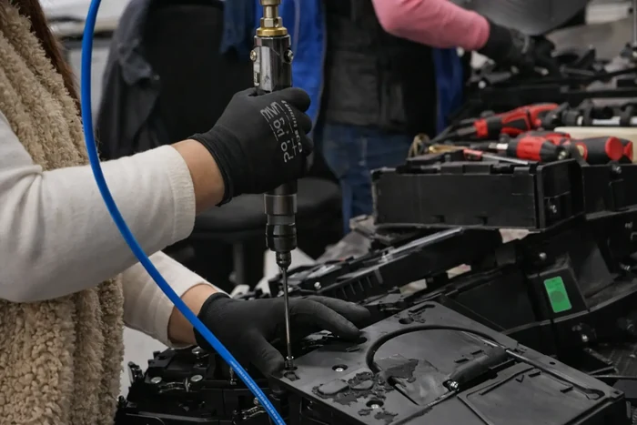
E-hulladék-kezelés
Elektronikai hulladék szakszerű bontását, válogatását és előkezelését végezzük.
E-hulladék-kezelés
Szakszerű bontás és előkezelés
Elektronikai hulladék szakszerű bontását, válogatását és előkezelését végezzük.
Elektronikai hulladékok kézi bontása
Fióktelepünkön veszélyes és nem veszélyes hulladék gyűjtését és előkezelését végezzük, elsősorban elektronikai és számítástechnikai eszközök kézi bontásával, valamint a különböző anyagösszetevők szerinti válogatásával foglalkozunk.
Tevékenységünk célja a hasznosítható anyagok minél hatékonyabb elkülönítése és a hulladék megfelelő további kezelése.
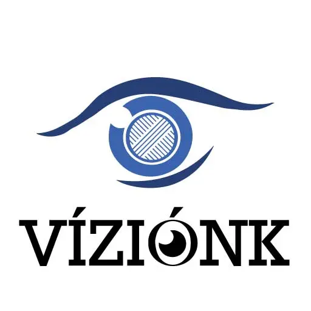
Víziónk
1953 óta küldetésünk, hogy valódi értéket teremtsünk: méltó munkalehetőséget biztosítunk megváltozott munkaképességű embereknek, és támogatjuk őket abban, hogy aktív, megbecsült tagjai legyenek a társadalomnak.
BővebbenÜzemegységek

Sík- és körkötő üzem
Számítógép-vezérelt sík- és körkötőgépekkel működő, modern digitális textilipari üzemegység.
Sík- és körkötő üzem
Modern digitális textilipari technológia
Számítógép-vezérelt sík- és körkötőgépeinkkel modern, digitális textilipari technológiára építünk. A technológiai háttér segíti a kapacitás rugalmas bővítését, a gyártási tervekhez való gyors alkalmazkodást, és egységes minőségű gyártást tesz lehetővé – kis és nagy szériában is.
Kötőgépparkunk
Kiterjedt gépparkunk az alábbi géptípusokból áll:
- Shima Seiki síkkötőgépek 5-ös, 7-es, 8-as, 12-es és 14-es gépfinomsággal
- MEC-MOR körkötőgépek 12-es gépfinomsággal
Egyedi mintázás és különleges kötések
Kötödei mintázóprogramjaink és tapasztalt mintázóink lehetővé teszik, hogy egyedi, akár komplex igényeket is pontosan megvalósítsunk.
Gépparkunk alkalmas az alábbi kötések készítésére:
- jacquard
- intarzia
- idomozott kötések
- terepmintás kivitel
- leopárdmintás kivitel
Idomozott modellek, igényes megjelenés
Idomozott termékeink esztétikus, elegáns megjelenéssel készülnek, magas minőségi színvonalon, a megrendelői elvárásokhoz igazítva.
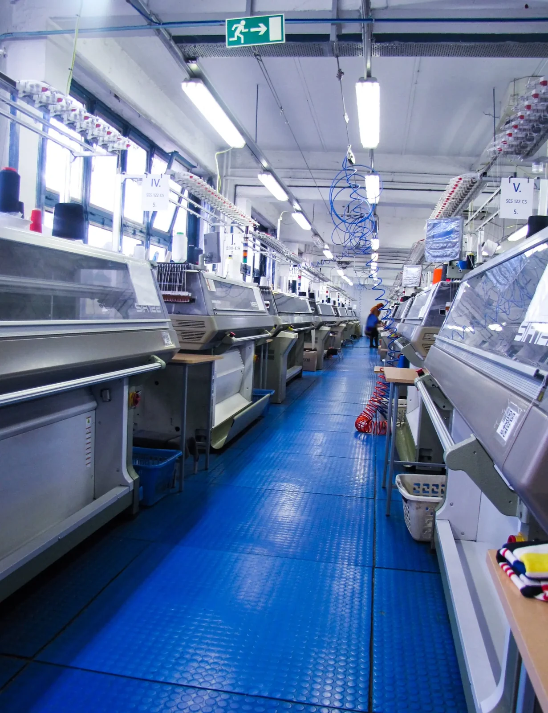
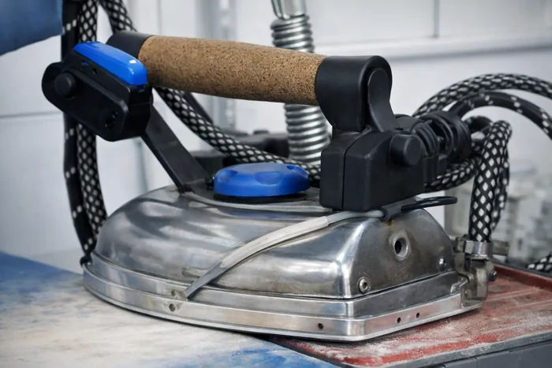
Félkész- és készáruvasaló üzem
Kikészítési, elővasalási és készáruvasalási folyamatok a méretpontos, esztétikus késztermékért.
Félkész- és készáruvasaló üzem
Kikészítési és elővasalási folyamat
A kötött lapok, idomlapok és idomozott alkatrészek a termékfejlesztés során rögzített műszaki leírás alapján kikészítési és elővasalási folyamaton mennek át.
A gőzölés segít abban, hogy a kelme elérje a technológiai előírások szerinti szerkezetet, és felvegye a kívánt méretet és formát.
Elővasalás és hőrögzítés
Az előkészített kötött lapokat asztali vasalóprésen fixáljuk, a műszaki dokumentáció szerint, hőrögzítéssel.
Ez támogatja a méretpontosságot és az egységes minőséget.
Készáruvasalás: végső formázás és simítás
A kész ruhadarabok befejező vasalása a készáruvasaló üzemegységben történik, ahol elvégezzük a végső formázást és simítást.
A készre vasalás két módon történhet:
- Karos készáru-vasalógépeken: a ruhadarabot feszített állapotban, méretre rögzítve vasaljuk.
- Asztali gőzölés + kézi utóigazítás: egyes modelleknél előkészítésként gőzölünk, majd kézi vasalással pontosítunk a kritikus részeken, például gallérnál, ujjvégeknél, patenteknél és szövetbetéteknél.
Eredmény: esztétikus, méretpontos késztermék
A gondosan felépített folyamat biztosítja, hogy a késztermékek szép megjelenéssel, pontos mérettel és magas minőségi színvonalon kerüljenek átadásra.
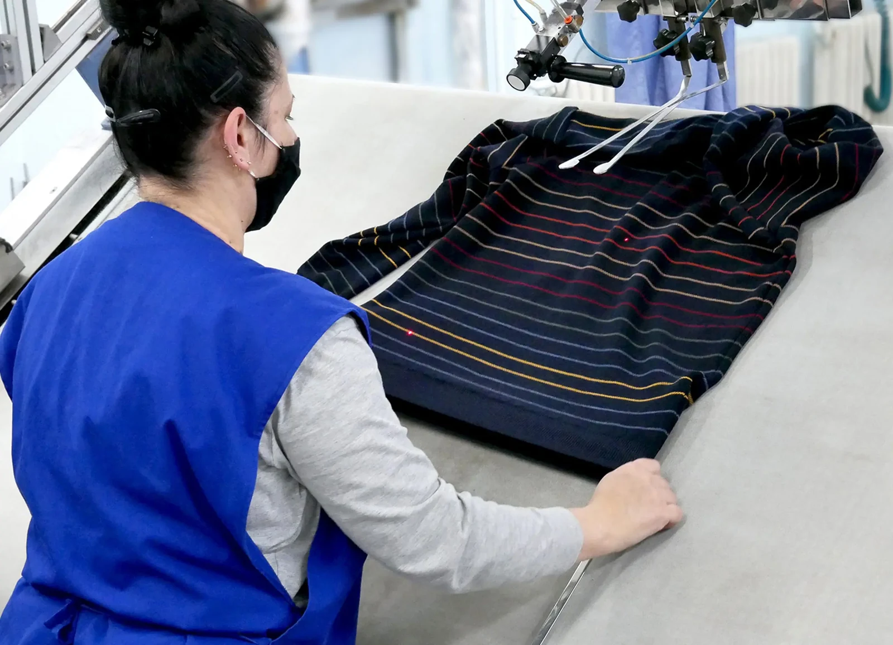
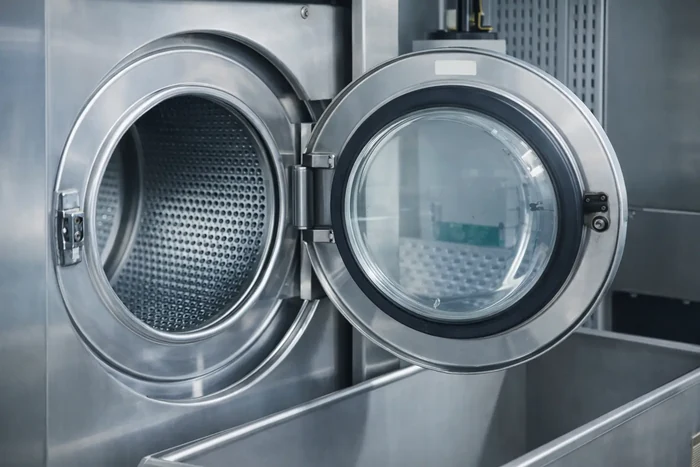
Mosó-kikészítő és fércelő üzem
Mosási, kikészítési és fércelési folyamatok a további gyártási lépések előkészítéséhez.
Mosó-kikészítő és fércelő üzem
Mosási és kikészítési előkészítés
A kötőgépekről lekerülő kötött lapokat az igényekhez igazodva különböző mosási és kikészítési eljárásokkal készítjük elő a további gyártási lépésekhez.
Fércelés: az előkészítés első lépése
A feldolgozás a fércelő üzemben indul. Itt a darabokat hátulvarró géppel elszegjük, majd a termékek a mosodába kerülnek további kikészítésre.
Mosás és kikészítés: egységes minőség, stabil kelme
A mosási és kikészítési folyamatok minden esetben előre rögzített műszaki leírás alapján történnek.
Korszerű IPSO mosó-, kikészítő-, szárító- és vegytisztító berendezéseink támogatják az egyenletes minőséget, a kelmeszerkezet stabilitását és az elvárt esztétikai megjelenést.
Használt berendezések
- IPSO HF 234
- IPSO MC 60
- IPSO DR 55
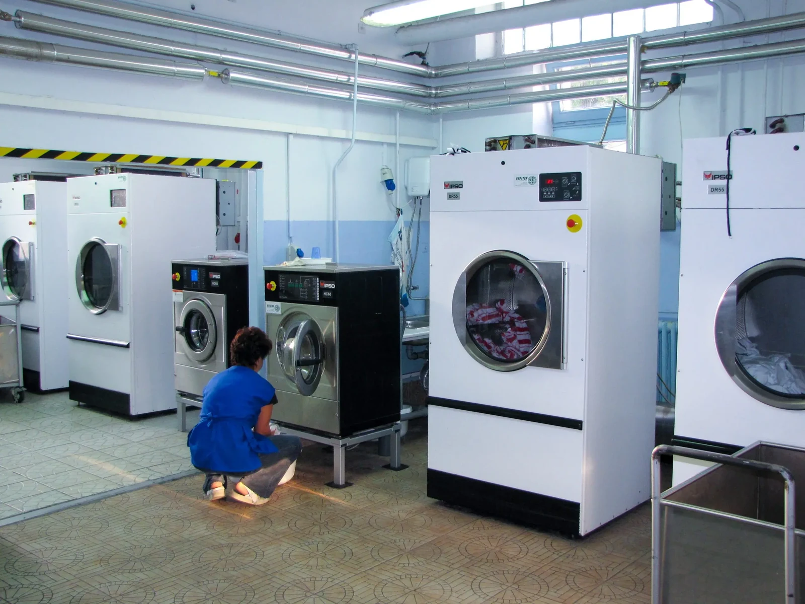
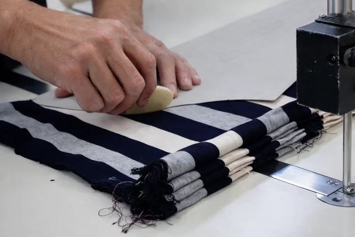
Szabászat
Digitális és manuális szabásminták alapján végzett pontos, anyagtakarékos szabászati előkészítés.
Szabászat
Digitális és manuális szabásminták
A ruházati termékek alkatrészeit digitális vagy manuális szabásminták alapján alakítjuk ki.
A szabáshoz digitálisan tervezett felfektetési és terítékrajzokat használunk, így a folyamat átlátható és pontos.
Pontos méret, anyagtakarékos kivitelezés
A szabás korszerű gépi és kézi szabászgépekkel történik.
Ennek köszönhetően biztosítható:
- a méretpontosság
- az anyaghatékony felhasználás
- az egységes minőség
Stabil alap a további gyártáshoz
A gondosan előkészített szabás a varrás és konfekcionálás megbízható kiindulópontja.
Ez támogatja a hatékony gyártást és a magas minőségű késztermékek előállítását.
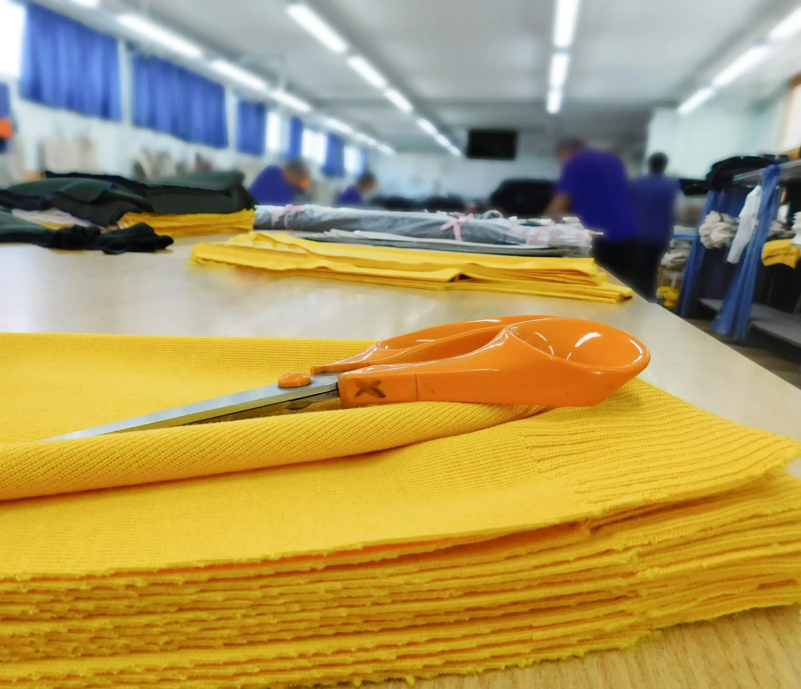
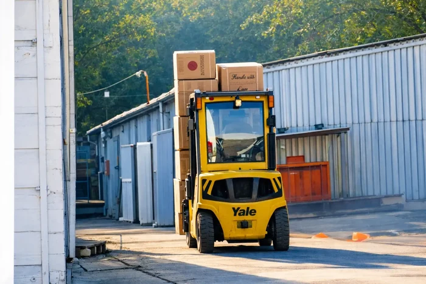
Logisztika
Belföldi és nemzetközi áruszállítás stratégiailag kedvező szegedi logisztikai elhelyezkedéssel.
Logisztika
Stratégiai logisztikai elhelyezkedés
Székhelyünk Szegeden található, Magyarország déli részén, stratégiailag kedvező logisztikai elhelyezkedéssel, a szerb és román határ közelében.
Elhelyezkedésünk ideális alapot biztosít a belföldi és nemzetközi áruszállításhoz egyaránt.
Gyors elérhetőség
Budapest gyorsan elérhető a korszerű autópálya-hálózatnak köszönhetően, így Európa számos célpontja hatékonyan kiszolgálható közúton vagy légi úton.
Nemzetközi kiszállítás
Külföldi partnereinkhez a készárut jellemzően kamionos, közúti szállítással juttatjuk el.
Sürgős esetben légi szállítást is biztosítunk a gyors és rugalmas teljesítés érdekében.
Belföldi logisztika
Belföldön saját és bérelt járművekkel végezzük a szállítást.
A be- és kiszállítások heti rendszerességgel, előre tervezetten történnek, így ügyfeleink pontos, megbízható teljesítést kapnak.
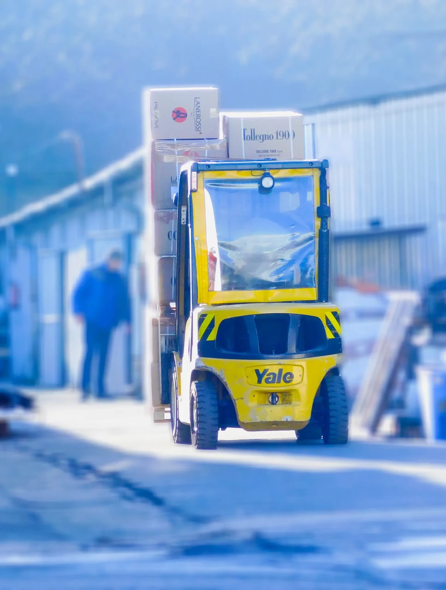
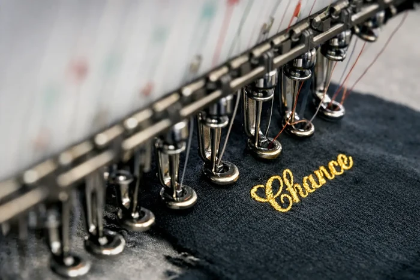
Hímző- és szitanyomó üzem
Hímzés és szitanyomás házon belül, egyedi megjelenéshez és tartós textilnyomatokhoz.
Hímző- és szitanyomó üzem
Hímzés: precíz logózás és egyedi megjelenés
Hímzőüzemünkben 4 db nagy kapacitású, számítógép-vezérelt, 8 fejes hímzőgéppel dolgozunk.
Gép- és szoftverparkunkat folyamatosan fejlesztjük, hogy partnereinknek stabil, egységes és magas minőségű kivitelezést biztosítsunk.
Hímzési lehetőségek
Tapasztalt csapatunkkal és korszerű hímző szoftvereinkkel készítünk:
- egyedi tervezésű hímzéseket
- szériagyártásra alkalmas hímzéseket
- logóhímzést kis és nagy darabszámban
Felhasználási területek
Hímzést vállalunk többek között:
- pólókra
- kötött felsőruházatra
- kabátokra
- munkaruházatra és egyéb késztermékekre
Szitanyomás: tartós, egységes nyomat nagy tételben is
Szitanyomó üzemegységünkben pólók, pulóverek, munkaruhák és egyéb textiltermékek házon belüli szitanyomását végezzük.
Modern textilnyomó gépeinkkel nagy darabszámban is kiváló minőségű, egységes nyomatokat készítünk.
Direkt és transzfer szitanyomás
A gyártás során direkt és transzfer szitanyomási technológiákat alkalmazunk. A klasszikus megoldások mellett különleges, egyedi hatású nyomatok kivitelezésére is van lehetőség.
Tartós és komfortos viselet
A felhasznált festékek és alapanyagok garantálják a tartós, kopásálló és esztétikus nyomatokat.
Nyomataink vékony festékréteggel készülnek, így a kész ruhadarabok könnyű, komfortos viseletet biztosítanak.
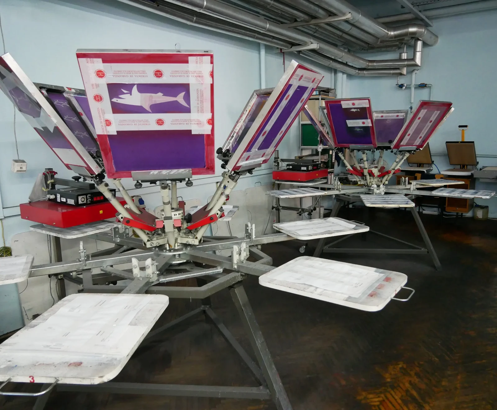
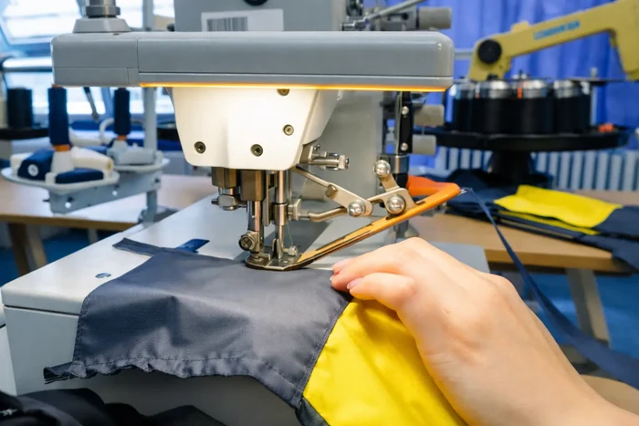
Varróüzem
Konfekcionálási és befejező műveletek korszerű ipari varrógépekkel és felkészült varrodai csapattal.
Varróüzem
Konfekcionálási műveletek
A kötőgépről lekerülő idomozott vagy kiszabott darabok konfekcionálási, befejező műveleteket igényelnek.
Ezt a folyamatot korszerű, nagyüzemi technológiával és felkészült varrodai csapattal végezzük.
Modern géppark, megbízható minőség
Varróüzemünkben többfunkciós, energiatakarékos ipari varrógépek, valamint elektronikusan programozható gomblyukvarrógépek segítik a pontos és egységes kivitelezést.
Az egyes műveleteket speciális varrógépekkel végezzük, a termék igényeihez igazítva.
Széles gépválaszték nagyobb kapacitáshoz
Gépparkunkban az alapgépek mellett elérhető többek között:
- kettli
- interlock
- fedőző
- hátulvarró
- dísztűző
- gombozó
- gomblyukazó
Gyorsabb gyártás, rugalmas kiszolgálás
A varrodában is folyamatosan törekszünk az automatizálásra, ami segíti a gyártás gyorsítását, és lehetővé teszi a nagyobb megrendelői igények hatékony kiszolgálását.
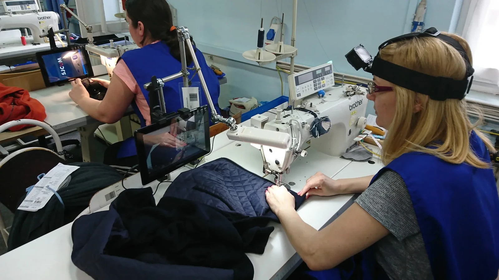
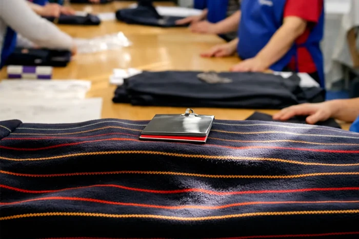
Minőségellenőrzési Osztály (MEO)
Többlépcsős késztermék-ellenőrzés, címkevizsgálat, csomagolás és kiszállítási előkészítés.
Minőségellenőrzési Osztály (MEO)
Többlépcsős késztermék-ellenőrzés
A gyártás végén minden készterméket többlépcsős ellenőrzésnek vetünk alá a műszaki dokumentáció alapján.
Így biztosítjuk, hogy a kiszállított áru méretben, jelölésekben és minőségben is megfeleljen az elvárásoknak.
Minőség- és címkeellenőrzés
Ellenőrizzük többek között:
- a minőséget és a méretet
- az alapanyag-összetételt
- a márkanevet és a termék megnevezését
- a kezelési utasításokat tartalmazó címkéket
A címkéket és jelöléseket szükség esetén minősítjük / jóváhagyjuk, hogy a készáru minden előírásnak megfeleljen.
Csomagolás és kiszállítás előkészítése
Az ellenőrzés után elvégezzük a késztermékek:
- csomagolását
- dobozolását
- valamint elkészítjük a csomaglistát a kiszállításhoz
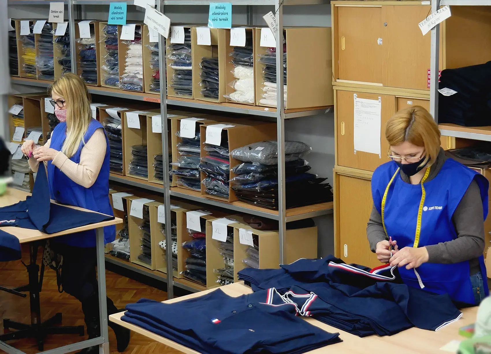
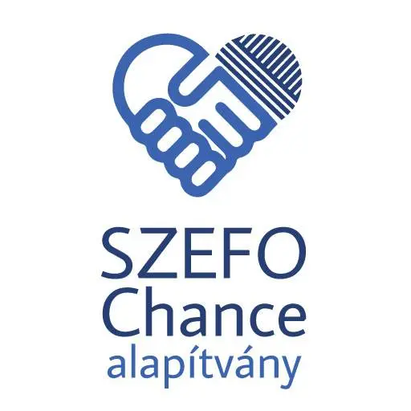
Társadalmi felelősségvállalás
Alapítványunk
Társaságunk a társadalmi felelősségvállalás jegyében kiemelten támogatja a megváltozott munkaképességű személyek elfogadásának erősítését.
A SZEFO Fonalfeldolgozó Chance Közhasznú Alapítvány célja a hátrányos helyzetű, fogyatékos, illetve megváltozott munkaképességű emberek társadalmi integrációjának elősegítése, életminőségük javítása, az általános diszkriminációmentesség és magasabb életszínvonal támogatása helyi, regionális és társadalmi szinten.
Bővebben az alapítványról
Partnereink
Referenciáink
Partnereink és megrendelőink visszatérő bizalma meghatározó érték számunkra.
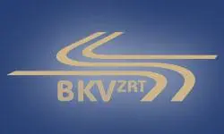
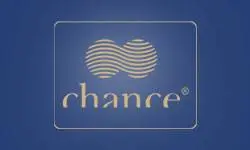